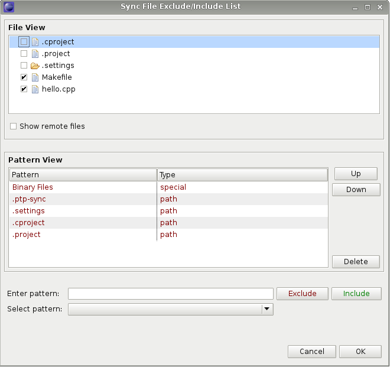

Synchronized projects consist of files that are mirrored on the local system as well as on one or more remote systems. Editing occurs locally and each file is synchronized with the currently active remote system when it is changed, created, or deleted. This enables faster interaction with the files and editor, more CDT editor features since the files are local, and continued interaction for editing etc. if the network connection is lost.
To host a synchronized project, the remote system must support the Git distributed version control system.
To create a new Synchronized Project, first select an appropriate wizard:
Select File > New > Other... then in the wizard selection dialog, select Remote > Synchronized C/C++ Project or Synchronized Fortran Project
Or, from the context menu (right-mouse) in the Project Explorer, select New > Synchronized C/C++ Project or Synchronized Fortran Project


Select Next to scroll through the remaining pages, which differ based on the selected project types and toolchains. At some point, you should see the configuration page, which will list a separate build configuration for each toolchain selected earlier.


The starting configuration will be for one of the remote toolchains. Thus, for the most common case (a single remote site to be modified and built), a synchronized project works out-of-the-box. If the remote location does not exist, it is created. Otherwise, the files in that directory will be synchronized to the local workspace. Edit the files as you would any local project. Each time you save a file, it will be synchronized with the remote system. If you create or delete files, the remote system will be updated appropriately.
By default, a synchronized project is configured to build on the same remote host as for synchronization. To build the project (assuming you have already created a makefile), make sure the project is selected in the Project Explorer view, then click on the build icon (the icon that looks like a hammer).
Synchronization and building are done between the local workspace and the active configuration. You can change the active configuration by using the "sundial" icon next to the build icon, or build and switch simultaneously using the arrow next to the build icon. Local configurations have sync disabled initially and build in the Eclipse workspace.
You can create configurations to synchronize and build on other remote systems from the C/C++ Build > Synchronize project properties. To bring up the Synchronize project properties, in the Project Explorer view, select the project and choose Properties from the context menu (right click). You can also use these property pages to modify configurations in general. See the CDT documentation for more details.

The sync context menu lets you alter the sync behavior and can be accessed with a right click on a sync project. From this menu, you can turn off automatic sync'ing (sync after saving files and other resource changes) so that syncs only occur on request. This setting is applied to all projects in the workspace. The "Project Auto-Sync Settings" submenu allows you to alter the behavior of automatic sync'ing per project. The next two selections allow you to force an immediate sync of the current project. A "sync all" syncs all configurations of a project. Note that this can be quite slow if your project has several configurations. Prior to a build, files are always updated with a forced sync of only the active configuration, regardless of any settings. This ensures that the build is based on the latest revisions. Another sync may occur after the build to update files, since the build may alter the remote files during compilation. (This sync, however, does respect the user's settings.) See "Changing which files are synchronized" for information on the "Filter..." option.

From the "Filter..." option of the sync context menu, you can change which files are synchronized for the current project. You can also change the default settings for future projects on the "Synchronized Project" preference page. For files and folders, "Exclude Selection" and "Include Selection" shortcut options are also available from the context menu.
By default, files and directories specifically used by Eclipse are excluded. (Note that these files, such as .project etc. are normally not visible.)
The "File View" always indicates the currently excluded and included directories and files, while the "Pattern View" always shows the current exclude and include patterns. (The file view is not shown on the preference page.) Each view updates automatically if the other view is changed, so that they are always in agreement. This allows you to see immediately the effect of adding a new pattern. By default, remote files are not shown. Showing remote files may lead to a slower response time while updating views. An error message is printed if the remote is disconnected.
You can deselect or select directories or files in the File View, which will add the corresponding exclude or include pattern to the pattern view. These are "path" patterns, meaning that directories or files in the specified path are excluded or included. Underneath the Pattern View, you can manually enter a path (Enter Path:). You can also enter a regular expression ("regex") that is compared to the project-relative path. The regular expression syntax is that of the Java programming language. An error message is printed if the regular expression is not valid. Finally, you can select "special" patterns from the "Select pattern" drop-down. Currently the only special pattern is one for matching binary files.
Patterns are applied in the order given in the Pattern View, and new patterns are always placed at the top (highest priority). So a file will be excluded or included based on the first matching pattern, or included if no pattern matches. Use the "Up" and "Down" buttons to change a pattern's priority. If a new pattern is identical to an old pattern and has the same type, the old pattern is removed. Note that it doesn't matter whether the old pattern was an exclude or include pattern, since the new pattern supersedes it.

The conversion wizard allows you to convert current C/C++ or Fortran projects to synchronized projects. Currently only local projects can be converted. To convert a project right-click in the workspace and select New > Other... In the wizard selection dialog, select Remote > Convert C/C++ or Fortran Project to a Synchronized Project > Next. From this dialog, you can select a project to convert and configure a remote site. See Creating a remote connection for details on creating new connections. The selected configurations are duplicated to create a local version and a remote version. Unselected configurations remain as local configurations only. After creating the project, you may want to change the toolchain for the remote configurations. You can do this from Project > Properties > C/C++ Build > Tool Chain Editor. After selecting a toolchain, you must change the current builder back to the "Sync Builder" in order for builds to occur remotely.
 |
 |
A "merge conflict" can occur, in general, when merging two different versions of a file into a single version. There may be disagreement, for various reasons, on what the final version should be. For synchronized projects, merge conflicts do not occur during normal use, because the underlying system knows that local file changes are updates to older remote versions, or vice versa. Merge conflicts may occur, however, if files are changed both locally and remotely without an intervening sync, because the next sync may not know how to merge the two versions. (It is a good idea to sync after making remote changes before resuming work in Eclipse.) When a conflict is detected, the following dialog appears:


After a merge conflict, the local file has markers and annotation added to show the differing content on the local and remote sites. This is useful for editing the file by itself, but not so much for using the compare editor. Select "Reset to version before merge" in the context menu to revert the local file to its prior version. Now the compare editor will show clearly the differences between local and remote.
At the time of the PTP 5.0 release (June 2011), the mechanism for supporting remote includes in CDT does not work automatically with synchronized projects yet, as it requires some integration with the remote scanner discovery (which discovers what includes/defines are set on the remote system).
You can currently manually configure remote include files as follows:
//connection_name/usr/include where 'connnection_name' is the name of the connection you specified
for the Remote Tools service provider
/usr/include using the connection lincoln.ncsa.uiuc.edu that you
previously configured, you would use the path //lincoln.ncsa.uiuc.edu/usr/include
See also Synchronized Projects usage info on the PTP Wiki page for information available after the PTP 6.0 release.
See Local Vs. Remote Projects for more information on the different kinds of local and remote projects.